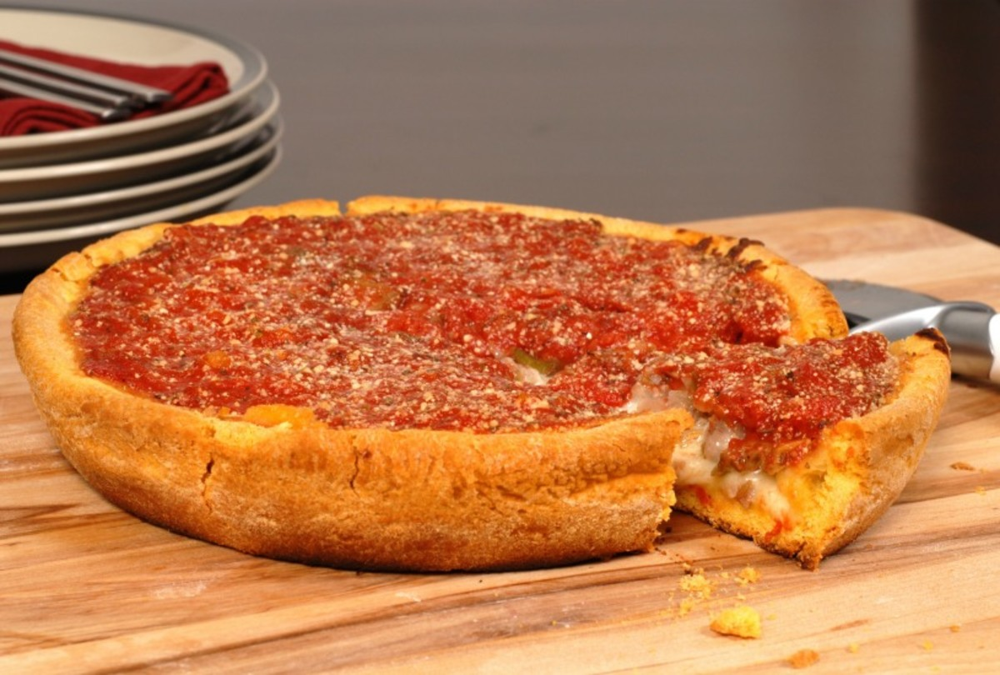
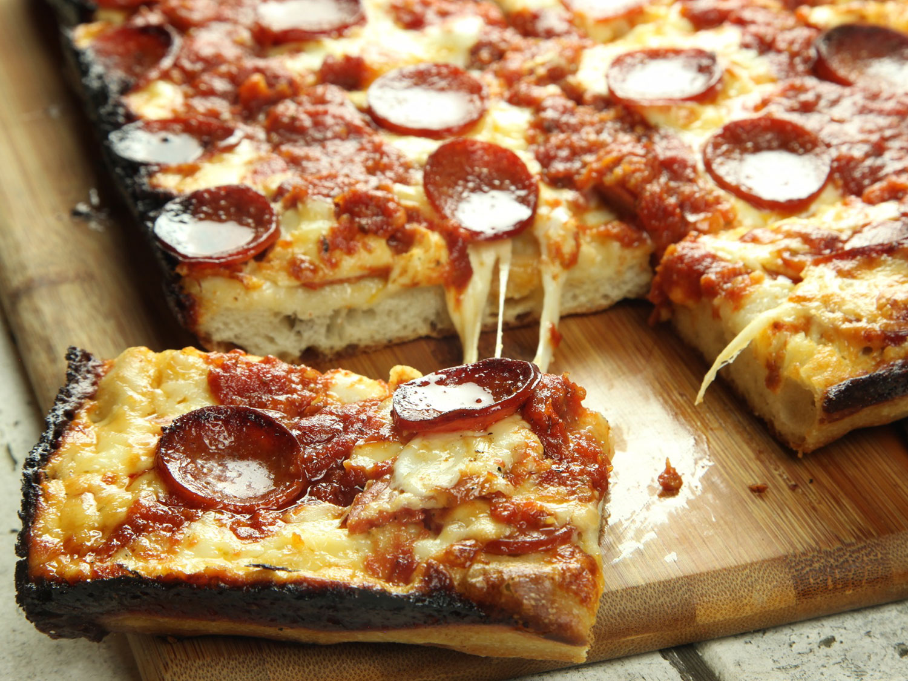
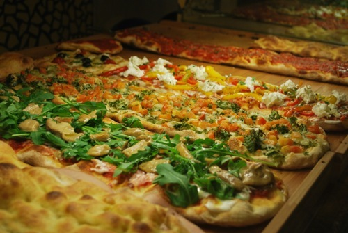
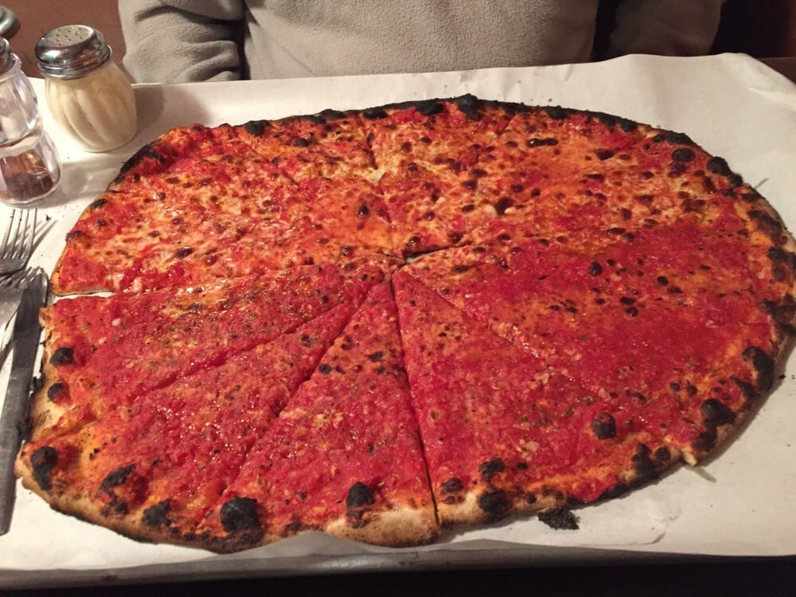
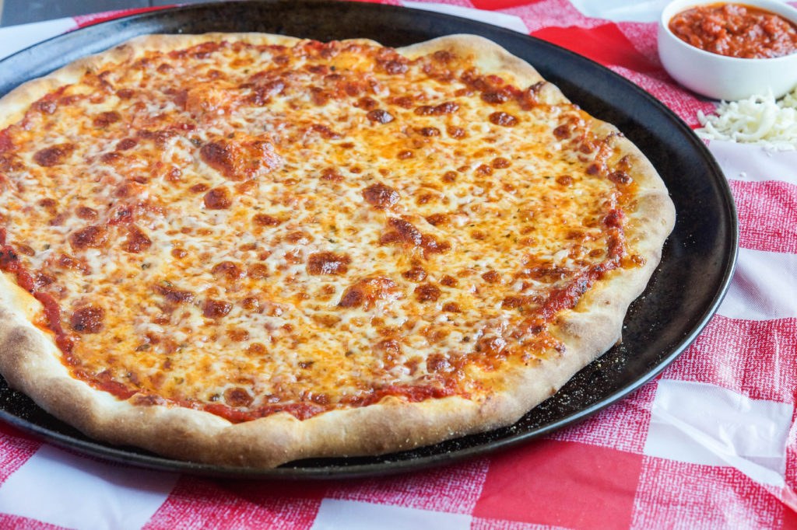
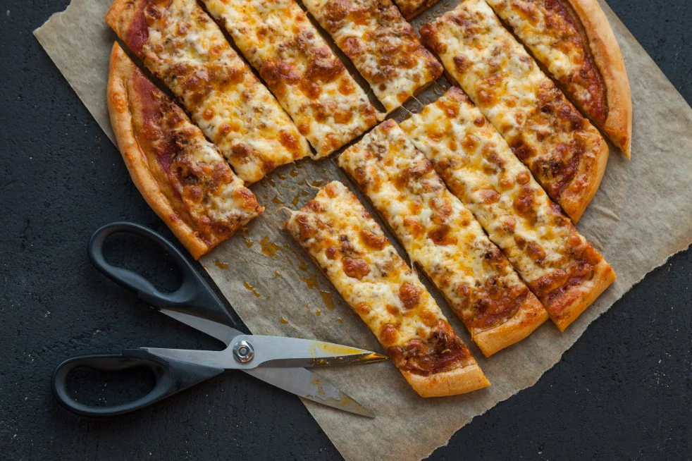

The most famous is deep-dish pizza. The pan in which it is baked gives the pizza its characteristically high edge which gives a lot of space for large amounts of cheese and a chunky tomato sauce. Chicago-style pizza may be prepared in deep-dish style and as a stuffed pizza.Toppings typically go inside along with the cheese.
{kind=link}
It is a rectangular pizza that has a thick crisp crust. The rectangular-shaped pizza is the result of being baked in a square pan, which is often not a pizza pan. The crust of a Detroit-style pizza is occasionally twice-baked and it is usually baked in a well-oiled pan to a chewy medium-well-done state that gives the bottom and edges of the crust a fried or crunchy texture. Some parlors will apply melted butter with a soft brush prior to baking. The resulting pizza has a chewy texture.
{kind=link}
There are two kinds of Italian styles
1. Neapolitan - Consisting of a usually round, flattened base of leavened wheat-based dough topped with tomatoes, cheese, and various other ingredients.It is baked at a high temperature, traditionally in a wood-fired oven, which gives it the burnt and crunch crust. In casual settings it is cut into wedges to be eaten while held in the hand, but occasionally is eaten with a knife and fork.

2. Roman - A typically lighter crust baked in a square pan, where the yeast has risen for a longer time. Slices are cut with a knife in a strip fashion.
{kind=link}
In a New Haven-style pizzeria, a "plain" pizza is crust, oregano, and tomato sauce with a little bit of grated pecorino romano cheese sprinkled on and does not include Mozzarella cheese. A "plain" New Haven style pizza may also be called a "tomato pie".
{kind=link}
New York-style pizza is traditionally hand-tossed, consisting in its basic form of a light layer of tomato sauce sprinkled with dry, grated, full-fat mozzarella cheese; additional toppings are placed over the cheese. Pies are typically around 18 inches (45 cm) in diameter, and commonly cut into 8 slices. These large wide slices are often eaten as fast food while folded in half (like one would fold a cardboard box) from the crust, as their size and flexibility can make them unwieldy to eat flat. Folding the slice also collects the abundant oil in the crease, and allows the slice to be eaten with one hand. New York-style pizza gets its distinguishing crust from the high-gluten bread flour with which it is made. Minerals present in New York City's tap water supply are also credited with giving the dough in metro area pies their characteristic texture and flavor.
{kind=link}
Centered around the Quad Cities region of Iowa and Illinois in the United States. The crust has a nutty taste, the tomato sauce is sometimes spicy, the toppings are under the cheese, and the pizza is cut into strips.
{kind=link}